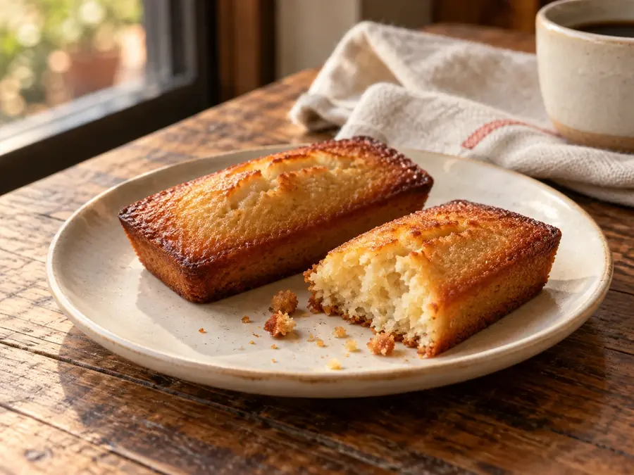
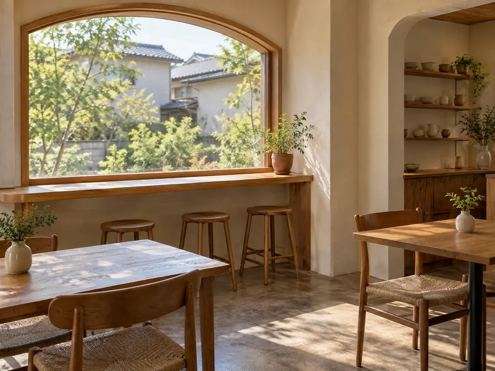

けさ焼いたフィナンシェ
焦がしバターの香りが立つ、焼き上がりから半日がいちばんの菓子。浅煎りの酸味とよく合います。
300円（税込）- 売り切れたら、その日はおしまい
- 取り置きは受けていません

日替わりの焼き菓子の例（AI生成のイメージ）
焼き菓子は毎朝7時から焼き、その日に出しきる分だけ作ります。曜日ごとに、1つをおすすめにしています。
焦がしバターの香りが立つ、焼き上がりから半日がいちばんの菓子。浅煎りの酸味とよく合います。
300円（税込）曜日ごとのおすすめと価格は見本上の設定です（見本用の架空価格）。
大きな窓のある店を選んだのは、珈琲の色が、光の中でいちばんきれいに見えるからです。この店でしていることは、2つだけです。
果物のような酸味が残るところで火を止めます。苦いほうが好きな方のために、中煎りも1種類用意しています。迷ったら、注文のときに聞いてください。
前の日の残りは出しません。そのぶん数が少なく、夕方には選べる種類が減ります。早い時間ほど、選べるものが多くなります。
入る前に知っておくと安心な、席と過ごし方の事実を並べました。

席・設備・支払い方法はすべて見本上の設定です。
同じ窓でも、時間で光が変わります。来る時間で、選べる菓子も変わります。
朝のセット（780円）の時間。焼き菓子がいちばんそろっています。
いまの時間本日の珈琲と焼き菓子。土日の11時台はテーブル席が埋まることがあります。
いまの時間西日の入るカウンター。焼き菓子は残っている分だけです。ラストオーダーは17:30。
いまの時間祝日も営業します。年末年始の休みは、SNSでお知らせします（いずれも見本上の設定）。
カフェオレ（650円）は、ミルクを多めにできます。紅茶やジュースは置いていません。
持ち帰れます。紙の袋に入れてお渡しします。電話やSNSでの取り置きは受けていません。
大丈夫です。席が埋まっているときだけ、90分を目安にお願いしています。
ありません。自転車は店の前に2台まで置けます。近くの駐車場は「場所」の欄をご覧ください。
8:00〜18:00・水曜定休・カウンター6席とテーブル2卓。ひとりでも、そのまま入れます（見本上の設定）。
お店の場所を見る架空駅の北口から、風見坂をのぼって6分ほど。白い壁にアーチの窓が目印です。
住所・道順・地図はすべて架空です（見本上の設定）。
焼き上がった菓子の写真と、臨時のお休みをSNSに載せています。投稿の文面は見本のため載せていません。